46년 역사 약손명가의 골기테라피 수기 노하우를
정밀 공학 기술로 재해석한
프리미엄 홈케어 디바이스입니다.
46년 역사 약손명가의
골기테라피 수기 노하우를
정밀 공학 기술로 재해석한
프리미엄 홈케어 디바이스입니다.
물리적 무빙 에어 압착 &
타겟 지압볼 시스템
단순한 진동이나 LED가 아닌,
실제 손의 압박을 과학적으로 구현한
GOLKI LAB만의 독자 기술
손으로 강하게 압박하는 경락의 힘을 그대로 전달합니다.
피부가 아닌 근육층과 골막까지 직접 자극하여
즉각적인 붓기 완화와 라인 정리에 도움을 줍니다.
핵심 경락 포인트를 깊숙이 눌러주어
집중적인 리프팅 & 축소 효과를 실현합니다.
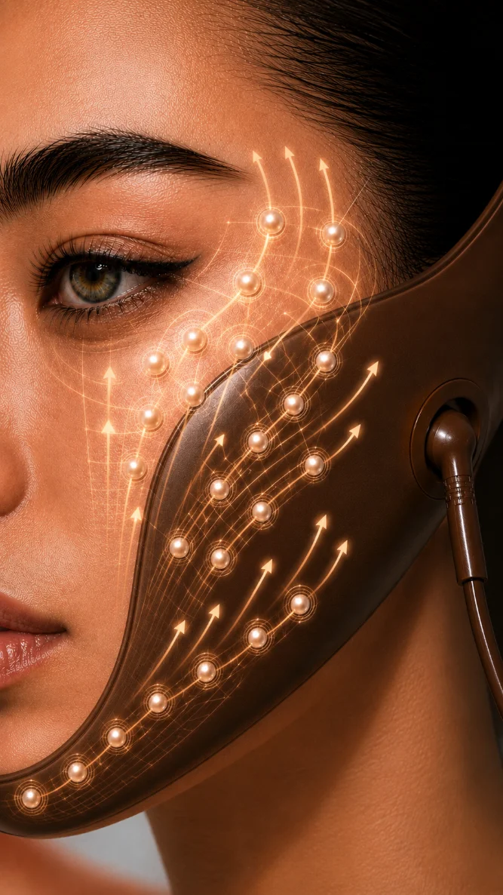
인체공학적 밴드 &
프리미엄 에어백 시스템
고탄성 프리미엄 실리콘 밴드가
얼굴 윤곽에 맞춰 유연하게 밀착되어
다양한 얼굴형에도 안정적으로 착용되며,
움직임에도 쉽게 흘러내리지 않습니다.
얼굴에 안정적으로 고정된 프리미엄 TPU 에어백은
얼굴의 곡선을 따라 자연스럽게 밀착되어
섬세하고 균일한 공기압을 전달합니다.
팽창과 수축을 반복하는 에어 모션이
부드러운 압박감을 형성하며
지압 시스템과 함께 턱선부터 광대, 두피까지
일정한 압력을 유지하여 더욱 효과적이고
편안한 프리미엄 페이스 케어를 제공합니다.
턱, 광대, 두피까지
전방위 입체 케어
하악에서 시작해 중안면부, 두피까지 유기적으로 연결되는
입체 압박 케어로 숨겨진 윤곽을 깨우고 탄력을 끌어올립니다.
약손명가의 철학을
담은 5가지 가치
기술로 담아낸 진정성 있는 케어
근본적인 아름다움 추구
정밀한 맞춤 케어
믿을 수 있는 안심 케어
아름다움일시적 변화가 아닌,
지속 가능한 건강한 아름다움 실현
컬러 &
커스텀 경락 패드
나만의 스타일에 맞춰 다양한 컬러의 디바이스를 선택하고,
원하는 부위와 케어 목적에 맞는 커스텀 경락 패드를 자유롭게 조합할 수 있습니다.
나만의 스타일에 맞춰 다양한 컬러의 디바이스를 선택하고,
원하는 부위와 케어 목적에 맞는 커스텀 경락 패드를
자유롭게 조합할 수 있습니다.
사용자의 얼굴형과 관리 스타일에 맞춰 패드의 위치와 종류를
직접 구성할 수 있어 더욱 개인화된 골기 케어가 가능하며,
필요에 따라 손쉽게 교체하여 최적의 압력과 자극을 경험할 수 있습니다.
사용자의 얼굴형과 관리 스타일에 맞춰
패드의 위치와 종류를 직접 구성할 수 있어
더욱 개인화된 골기 케어가 가능하며,
필요에 따라 손쉽게 교체하여
최적의 압력과 자극을 경험할 수 있습니다.
취향과 케어 방식을 모두 담은 맞춤형 GOLKI LAB™ 시스템을 완성해 보세요.
취향과 케어 방식을 모두 담은
맞춤형 GOLKI LAB™ 시스템을 완성해 보세요.
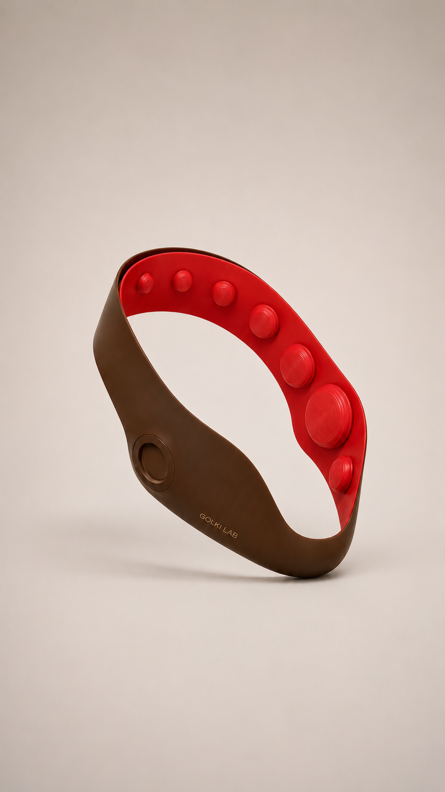
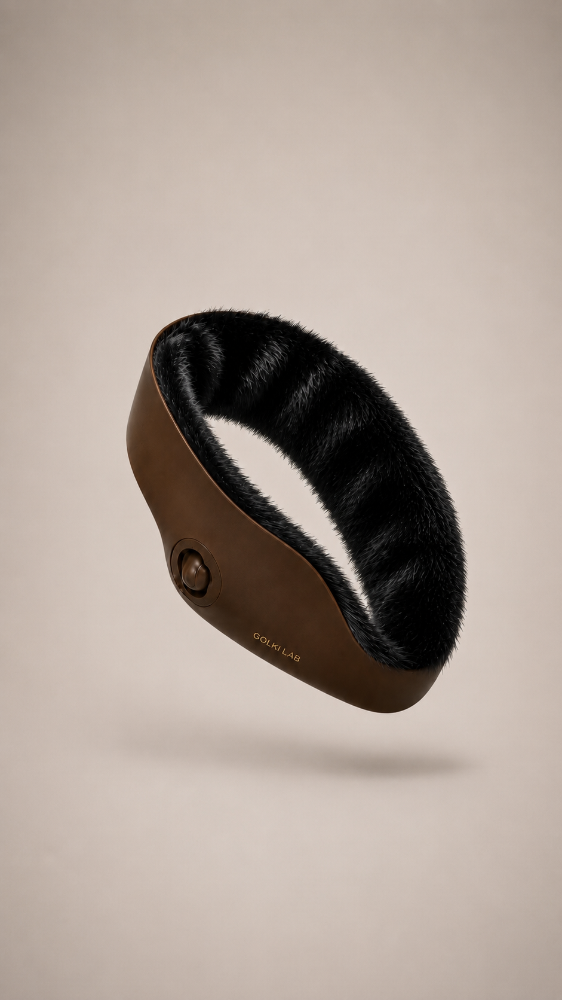
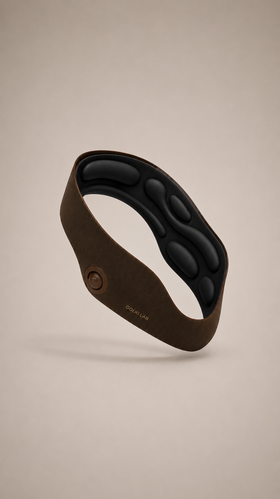


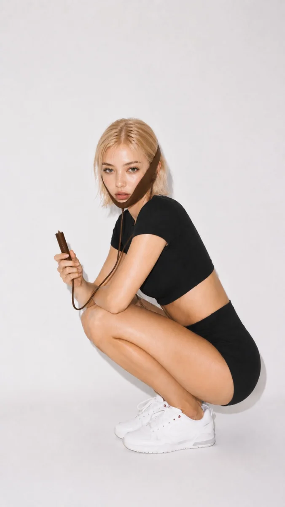
사용자 맞춤 메모리 기능
선택한 모드와 강도는 자동으로 기억되어
다음 사용 시 보다 편리하게 사용할 수 있습니다.
편안함과 안정성을
고려한 설계 디테일
GOLKI LAB AIRHANDS 시스템은 해부학적 구조와
경락 이론을 기반으로 0.1mm 단위의 정밀 설계와
인체공학적 데이터를 반영하여
최적의 압력과 피팅감을 구현했습니다.
특수 지압볼 디자인
6가지 다른 크기와 경도의 지압볼이
경락 포인트를 정밀하게 자극합니다.
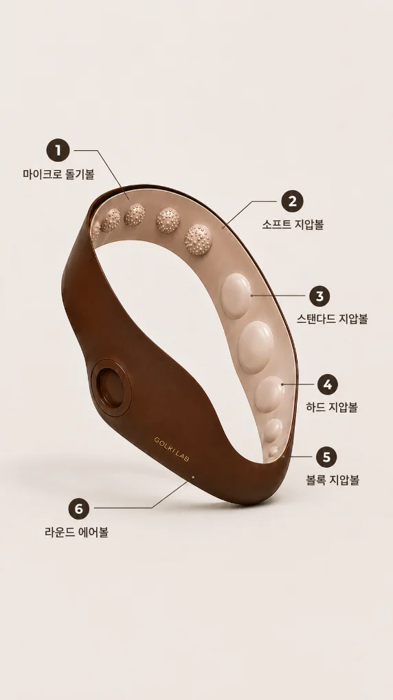
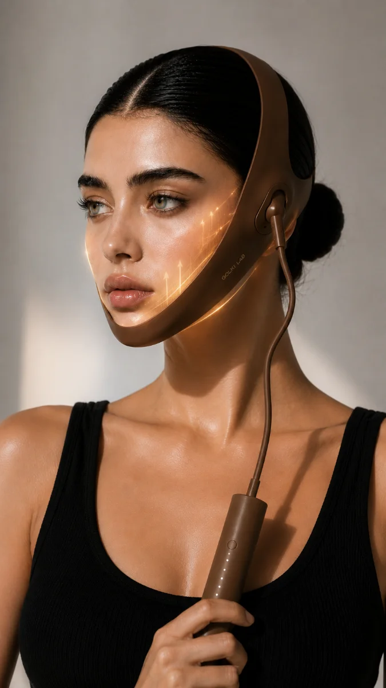
직관적인 컨트롤러 &
고정 벨크로
직관적인 원터치 컨트롤과 LED 인디케이터를 적용한 슬림한 컨트롤러로
모드와 강도를 한눈에 확인하고 손쉽게 조절할 수 있습니다.
5가지 프리셋 모드와 5단계 강도 조절 기능을 통해
오늘의 컨디션에 맞는 맞춤형 케어를 제공합니다.
직관적인 원터치 컨트롤과
LED 인디케이터를 적용한
슬림한 컨트롤러로
모드와 강도를 한눈에 확인하고
손쉽게 조절할 수 있습니다.
5가지 프리셋 모드와 5단계 강도 조절 기능을 통해
오늘의 컨디션에 맞는 맞춤형 케어를 제공합니다.
정수리 고정 벨크로 시스템은 머리 크기에 맞춰 쉽고 빠르게 착용할 수 있으며,
제품을 안정적으로 지지하여 사용 중에도 흔들림 없이 고정됩니다.
이를 통해 얼굴에 균일한 압력을 유지하고 에어백과 지압 시스템이 최적의 위치에서
안정적으로 작동하여 더욱 효과적인 케어를 완성합니다.
정수리 고정 벨크로 시스템은
머리 크기에 맞춰 쉽고 빠르게 착용할 수 있으며,
제품을 안정적으로 지지하여
사용 중에도 흔들림 없이 고정됩니다.
이를 통해 얼굴에 균일한 압력을 유지하고
에어백과 지압 시스템이 최적의 위치에서
안정적으로 작동하여 더욱 효과적인 케어를 완성합니다.
46년의 헤리티지,
미래의 기술
매일 단 15분,
약손명가의 골기테라피를
집에서 그대로 경험하세요.
GOLKI LAB™ System은
턱선부터 광대, 두피까지 입체적으로 케어하는
프리미엄 페이셜 & 스칼프 홈케어 시스템입니다.
약손명가의 46년 골기테라피 노하우를 기반으로,
인체공학적 설계와 스마트 기술을 결합하여
숙련된 전문가의 손기술을 현대적인 홈케어 기술로 구현했습니다.약손명가의 46년 골기테라피 노하우를 기반으로,
인체공학적 설계와 스마트 기술을 결합하여
숙련된 전문가의 손기술을
현대적인 홈케어 기술로 구현했습니다.
물리적 무빙 에어 압착과 정밀 지압 시스템이
얼굴과 두피의 핵심 포인트를 섬세하게 압박하여
숨겨진 윤곽과 탄력을 깨우고,
매일 집에서도 전문적인
골기 케어를 경험할 수 있도록 돕습니다.
손의 따뜻한 감성과 과학의 정밀함이 만나
누구나 쉽고 정확하게 사용할 수 있는
새로운 골기테라피를 완성했습니다.
사람의 손길이 닿아야 하는
섬세한 케어를 기술과 과학으로 구현하여,
누구나 일상 속에서 아름다움과 건강을 누릴 수 있도록.
46 Years of Heritage.
Reinvented for Everyday Care.
약손명가의 전문성과
연구로 검증된 힘
전문 연구기관과의 협업을 통해
효과와 안전성을 검증했습니다.
인체 구조에 기반한 정밀한 터치 기술
얼굴·두피·바디 통합 케어 철학
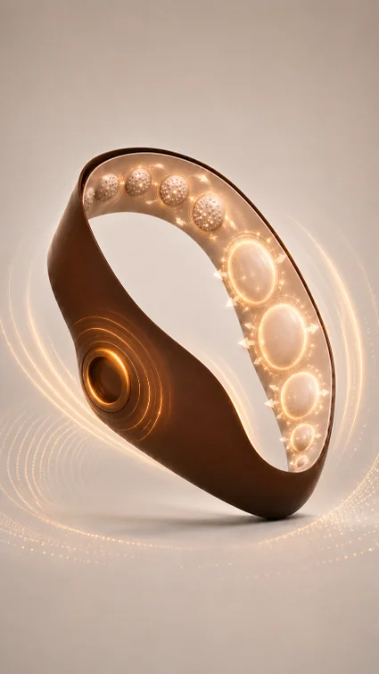
골기점을 자극하는 입체 돌기 구조
스마트 컨트롤러로 정밀 강도 & 모드 조절
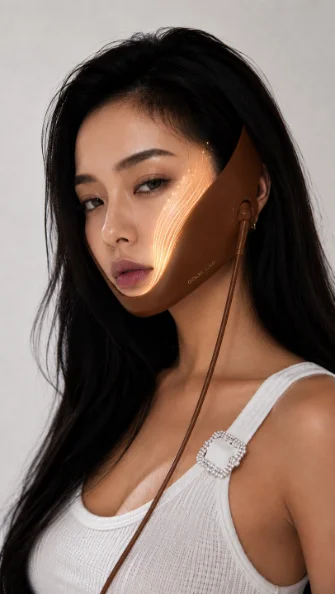
정돈된 라인과 피부 컨디션 개선
꾸준한 관리로 지속되는 아름다움
WHY GOLKI AIRHANDS?
GOLKI THERAPY MECHANISM
압박 → 자극 → 순환 → 탄력의 선순환 케어
5 CARE PROGRAM
전문가의 손길을 재현한 5가지 케어 프로그램
섬세한 5단계 강도 조절 시스템
숫자로 증명된
확실한 변화
골기랩 골기테라피는 인체 적용 시험을 통해
즉각적인 탄력 개선과 리프팅 효과가 검증되었습니다.
BEFORE & AFTER
올바른 착용법
정확한 착용은 최상의 효과와 안전한 사용을 위한 첫걸음입니다.
아래 순서를 따라 편안하고 완벽하게 착용해 주세요.
올바른 착용법
착용 TIP · 세안 후, 스킨케어가 흡수된 깨끗한 피부에 착용하세요.
착용 TIP · 머리카락이 끼지 않도록 정리하면 더욱 안정적인 고정이 가능합니다.
착용 TIP · 처음 사용 시에는 1단계부터 시작하여 점차 강도를 높여주세요.
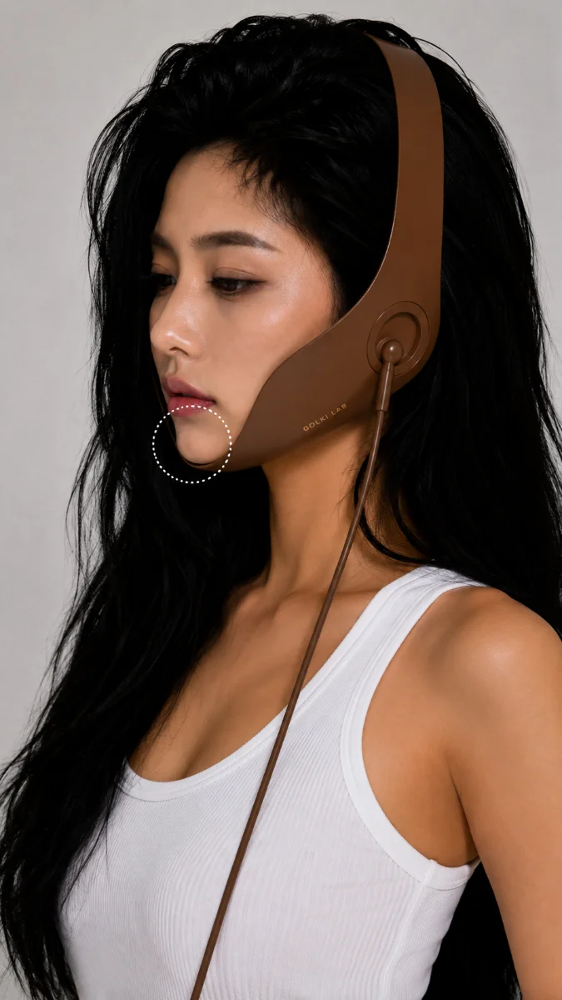
위치 잡기
제품의 중심을 턱 끝에 정확히 맞춘 후,
양쪽 날개 부분을 광대와 귀 뒤쪽을 지나
두피 쪽으로 부드럽게 감싸 올립니다.
정수리 밸크로 고정
머리 윗부분(정수리)에 위치한 고정 밸크로 스트랩을
사용자의 두상 크기에 맞춰 팽팽하게 당겨 단단히 고정합니다.
(흘러내리지 않도록 밀착시키는 것이 중요합니다.)
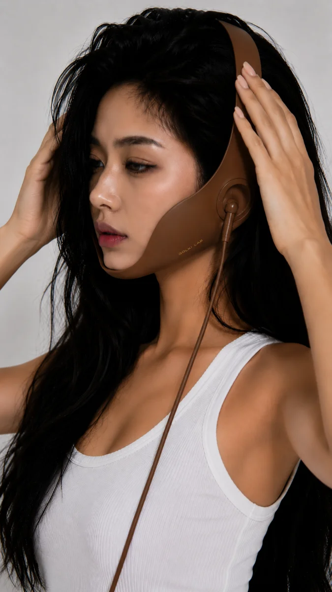
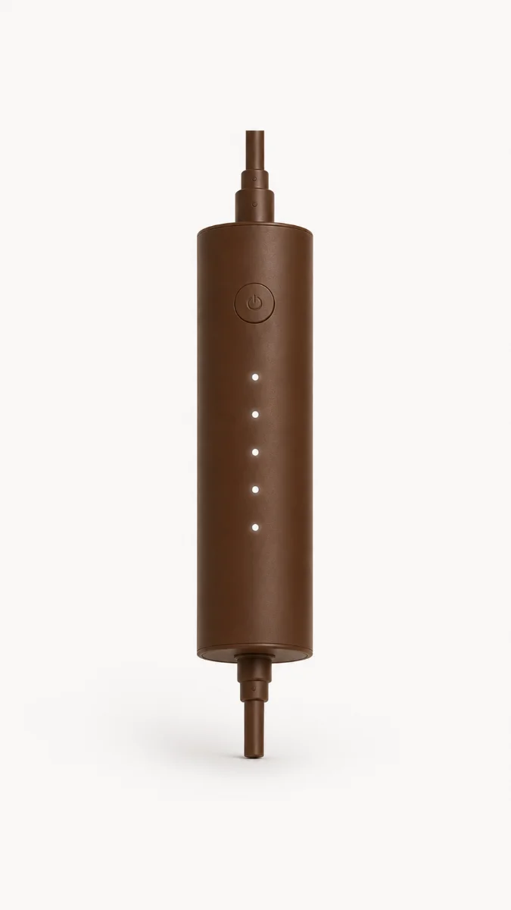
컨트롤러 연결 및 작동
동봉된 원통형 스마트 컨트롤러의 케이블을 본체에 연결한 후,
전원 버튼을 눌러 원하는 동작 모드와 에어 압착 세기를 선택합니다.
휴식 및 마무리
에어백과 지압볼이 작동하며 턱, 광대, 두피를 입체적으로 압박하는 동안
편안한 자세로 15분간 휴식을 취한 뒤 착용을 해제합니다.
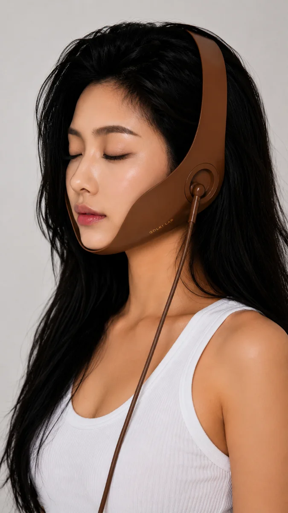
약손명가 46년, 한결같은 철학
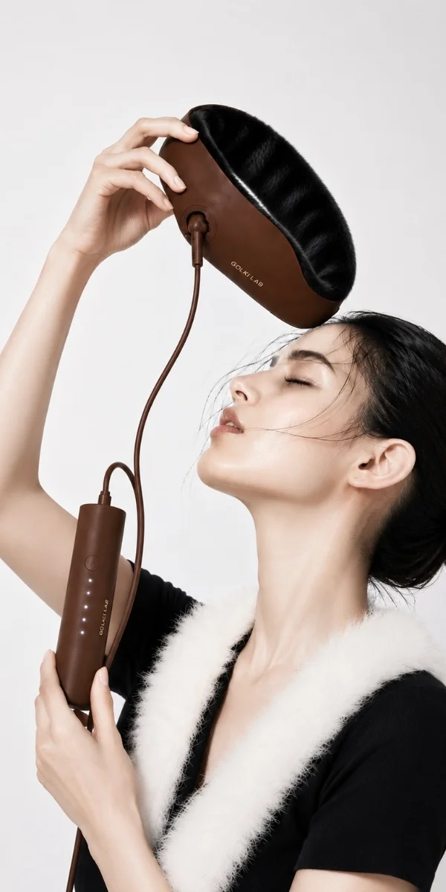
약손명가의 약속,
당신의 아름다움을 위한 약속
약손명가의 오랜 철학과 노하우가 담긴
골기랩 골기테라피 디바이스로
집에서도 전문가의 케어를 경험해보세요.